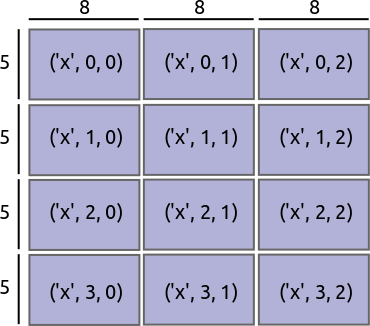

Internal Design¶
Overview¶
{kind=link}
Dask arrays define a large array with a grid of blocks of smaller arrays. These arrays may be actual arrays or functions that produce arrays. We define a Dask array with the following components:
A Dask graph with a special set of keys designating blocks such as
('x', 0, 0), ('x', 0, 1), ...(See Dask graph documentation for more details)A sequence of chunk sizes along each dimension called
chunks, for example((5, 5, 5, 5), (8, 8, 8))A name to identify which keys in the Dask graph refer to this array, like
'x'A NumPy dtype
Example¶
>>> import dask.array as da
>>> x = da.arange(0, 15, chunks=(5,))
>>> x.name
'arange-539766a'
>>> x.__dask_graph__()
<dask.highlevelgraph.HighLevelGraph at 0x7f9f6f686d68>
>>> dict(x.__dask_graph__()) # somewhat simplified
{('arange-539766a', 0): (np.arange, 0, 5),
('arange-539766a', 1): (np.arange, 5, 10),
('arange-539766a', 2): (np.arange, 10, 15)}
>>> x.chunks
((5, 5, 5),)
>>> x.dtype
dtype('int64')
Keys of the Dask graph¶
By special convention, we refer to each block of the array with a tuple of the
form (name, i, j, k), with i, j, k being the indices of the block
ranging from 0 to the number of blocks in that dimension. The Dask graph
must hold key-value pairs referring to these keys. Moreover, it likely also
holds other key-value pairs required to eventually compute the desired values
(usually organised in a HighLevelGraph, but shown
in a flattened form here for illustration):
{
('x', 0, 0): (add, 1, ('y', 0, 0)),
('x', 0, 1): (add, 1, ('y', 0, 1)),
...
('y', 0, 0): (getitem, dataset, (slice(0, 1000), slice(0, 1000))),
('y', 0, 1): (getitem, dataset, (slice(0, 1000), slice(1000, 2000)))
...
}
The name of an Array object can be found in the name attribute. One
can get a nested list of keys with the .__dask_keys__() method. Additionally,
one can flatten down this list with dask.array.core.flatten(). This is sometimes
useful when building new dictionaries.
Chunks¶
We also store the size of each block along each axis. This is composed of a tuple of tuples such that the length of the outer tuple is equal to the number of dimensions of the array, and the lengths of the inner tuples are equal to the number of blocks along each dimension. In the example illustrated above this value is as follows:
chunks = ((5, 5, 5, 5), (8, 8, 8))
Note that these numbers do not necessarily need to be regular. We often create regularly sized grids but blocks change shape after complex slicing. Beware that some operations do expect certain symmetries in the block-shapes. For example, matrix multiplication requires that blocks on each side have anti-symmetric shapes.
Some ways in which chunks reflects properties of our array:
len(x.chunks) == x.ndim: the length of chunks is the number of dimensionstuple(map(sum, x.chunks)) == x.shape: the sum of each internal chunk is the length of that dimensionThe length of each internal chunk is the number of keys in that dimension. For instance, for
chunks == ((a, b), (d, e, f))and name =='x'our array has tasks with the following keys:('x', 0, 0), ('x', 0, 1), ('x', 0, 2) ('x', 1, 0), ('x', 1, 1), ('x', 1, 2)
Create an Array Object¶
In order to create an da.Array object we need a graph with these special
keys:
layer = {('x', 0, 0): ...}
dsk = HighLevelGraph.from_collections('x', layer, dependencies=())
a name specifying which keys this array refers to:
name = 'x'
and a chunks tuple:
chunks = ((5, 5, 5, 5), (8, 8, 8))
Then, using these elements, one can construct an array:
x = da.Array(dsk, name, chunks)
In short, dask.array operations update Dask graphs, update dtypes, and track chunk
shapes.
Example - eye function¶
As an example, let’s build the np.eye function for dask.array to make the
identity matrix:
def eye(n, blocksize):
chunks = ((blocksize,) * (n // blocksize),
(blocksize,) * (n // blocksize))
name = 'eye' + next(tokens) # unique identifier
layer = {(name, i, j): (np.eye, blocksize)
if i == j else
(np.zeros, (blocksize, blocksize))
for i in range(n // blocksize)
for j in range(n // blocksize)}
dsk = dask.highlevelgraph.HighLevelGraph.from_collections(name, layer, dependencies=())
dtype = np.eye(0).dtype # take dtype default from numpy
return dask.array.Array(dsk, name, chunks, dtype)